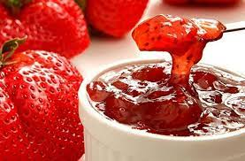
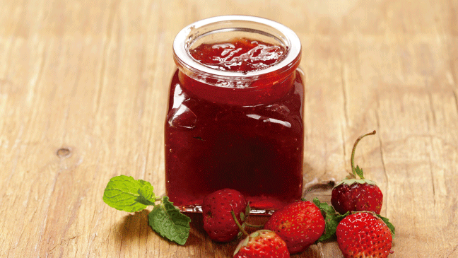

Mermelada Clásica de Frutilla
Descubre la receta tradicional para preparar una deliciosa mermelada casera de frutilla, perfecta para acompañar desayunos y meriendas.
Ver receta completaMermelada Light de Frutilla
Una versión ligera de la mermelada de frutilla, reducida en azúcar y con edulcorante natural, ideal para quienes cuidan su línea sin renunciar al sabor.
Ver receta completa